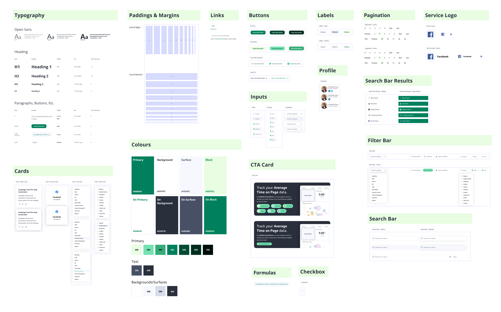

MetricHQ
Role
Project Lead
UI/UX Design
Team members
Nick Venne Developer
Introduction
Metric HQ is a community and library for business metrics.
Opportunity
MetricHQ helps you better understand metrics & KPIs so you can apply them in your business. Sets Klipfolio in a position of authority when it comes to metrics definition and best practices.
Help users in choosing a metric and making it easier to track it on a dashboard (using Klipfolio PowerMetrics).
Example of metric page
Anatomy of a metric page
Search in MetricHQ is an important feature that allows users to search for one keyword and get related hits, which would allow users to discover more options.
Searching takes into account metrics names, contributors, services, roles, categories, etc.
Search for a metric can be complex, therefore we added a filter system based on the category, service, and role. Other options include if the metric has an Instant Metric, it includes specific benchmark, or was written by an expert contributor.
An example of the contributors profile pages, highlighting their most visited metrics as well as other information.
An overview of the design system components used in MetricHQ
Final prototype
Success Metrics
After looking at the data, and evaluating the current user experience, we came to the following conclusions:
An increasee in annotations created
An increase in number of users per account due to sharing annotations